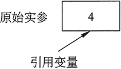
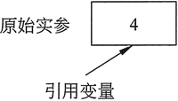

首页 > 编程笔记
C++函数引用传递（超详细）
前面讲过，实参通常是通过值传递给函数的，这意味着形参接收的只是发送给它们的值的副本，它们存储在函数的本地内存中。对形参值进行的任何更改都不会影响原始实参的值。
然而，有时候可能会希望一个函数能够改变正在调用中的函数（即调用它的函数）中的一个值，这可以通过引用传递的方式来完成。
我们知道，变量是可以保存数据的内存位置的名称。当使用变量时，实际上就是访问存储在分配给它的内存位置的数据。引用变量是变量的另一个别名，它没有自己的存储数据的内存位置，它访问的是另一个变量的内存位置。对引用变量作出的任何更改，实际上都是对它所引用的变量内存位置中存储数据的更改。
当使用引用变量作为形参时，它将变为实参列表中相应变量的别名，对形参进行的任何更改都将真正更改正在调用它的函数中的变量。当以这种方式将数据传递给形参时，该实参被称为按引用传递。
引用变量的定义方法和常规变量类似，但是其数据类型和名称之间有一个
该函数将 refVar 乘以 2，因为 refVar 是引用变量，所以该操作实际上将对作为实参传递给函数的变量执行。
具有引用形参的函数的原型也必须具有
下面的程序演示了引用变量形参的应用：

图 1 引用变量实际上指向的是被它引用的变量
当函数的目的是接收调用它的函数存储在变量中的输入值时，使用引用变量作为函数 形参特别有用。另外，引用形参还可以用于必须从函数发回多个值的情形。如果函数将计算并发回单个值，通常认为使用返回值的函数更合适，可以使用 return 语句返回值。
下面程序是对之前程序的修改。它添加了一个函数 getNum，该函数接收用户的输入并将其存储在 userNum 中，但是，形参 userNum 是对 main 的变量 value 的引用，所以这是实际存储输入数据的位置。
如果一个函数有多个形参是引用变量，则必须在原型和函数头中为每个形参使用
然而，有时候可能会希望一个函数能够改变正在调用中的函数（即调用它的函数）中的一个值，这可以通过引用传递的方式来完成。
我们知道，变量是可以保存数据的内存位置的名称。当使用变量时，实际上就是访问存储在分配给它的内存位置的数据。引用变量是变量的另一个别名，它没有自己的存储数据的内存位置，它访问的是另一个变量的内存位置。对引用变量作出的任何更改，实际上都是对它所引用的变量内存位置中存储数据的更改。
当使用引用变量作为形参时，它将变为实参列表中相应变量的别名，对形参进行的任何更改都将真正更改正在调用它的函数中的变量。当以这种方式将数据传递给形参时，该实参被称为按引用传递。
引用变量的定义方法和常规变量类似，但是其数据类型和名称之间有一个
& 符号。例如，以下函数定义使形参 refVar 成为引用变量：
void doubleNum(int& refVar)
{
refVar *= 2;
}
注意，变量 refVar 被称为“对 int 的引用”。该函数将 refVar 乘以 2，因为 refVar 是引用变量，所以该操作实际上将对作为实参传递给函数的变量执行。
具有引用形参的函数的原型也必须具有
& 符号。与函数头一样，它在数据类型和变量名之间。如果原型中省略了变量名，那么 & 符号将跟在数据类型后面。以下所有 doubleNum 函数的原型都是正确的：
void doubleNum(int &refVar);
void doubleNum(int& refVar);
void doubleNum(int &);
void doubleNum(int&);
& 符号必须出现在使用引用变量作为形参的任何函数的原型和函数头中。它不会出现在函数调用中。下面的程序演示了引用变量形参的应用：
#include <iostream> using namespace std; // Function prototype. The parameter is a reference variable. void doubleNum(int SrefVar); int main() { int value = 4; cout << "In main, value is " << value << endl; cout << "Now calling doubleNum..." << endl; doubleNum(value); cout << "Now back in main, value is "<< value << endl; return 0; } void doubleNum (int SrefVar) { refVar *= 2; }程序输出结果：
In main, value is 4
Now calling doubleNum...
Now back in main, value is 8

图 1 引用变量实际上指向的是被它引用的变量
当函数的目的是接收调用它的函数存储在变量中的输入值时，使用引用变量作为函数 形参特别有用。另外，引用形参还可以用于必须从函数发回多个值的情形。如果函数将计算并发回单个值，通常认为使用返回值的函数更合适，可以使用 return 语句返回值。
下面程序是对之前程序的修改。它添加了一个函数 getNum，该函数接收用户的输入并将其存储在 userNum 中，但是，形参 userNum 是对 main 的变量 value 的引用，所以这是实际存储输入数据的位置。
#include <iostream>
using namespace std;
//Function prototypes
void getNum(int &);
int doubleNum(int);
int main()
{
int value;
// Call getNum to get a number and store it in value
getNum(value);
value = doubleNum(value);
// Display the resulting number
cout << "That value doubled is " << value << endl;
return 0;
}
void getNum(int &userNum)
{
cout << "Enter a number: ";
cin >> userNum;
}
int doubleNum (int number)
{
return number *2;
}
程序输出结果：
Enter a number: 12
That value doubled is 24
如果一个函数有多个形参是引用变量，则必须在原型和函数头中为每个形参使用
& 符号。以下是使用 4 个引用变量形参的函数的原型：void addThree(int& num1, int& num2, int& num3, int& sum);
以下是函数定义：
void addThree(int& numl, int& num2, int& num3, int& sum)
{
cout << "Enter three integer values: ";
cin >> num1 >> num2 >> num3;
sum = num1 + num2 + num3;
}
但是请注意，addThree 函数只需要一个引用形参 sum，其他 3 个形参可以通过值接收它们的实参，因为函数没有改变它们。提示：应该仅在绝对需要时才使用引用变量。任何时候允许一个函数来改变函数之外的变量，其实都是在创建潜在的调试问题。
关注公众号「站长严长生」，在手机上阅读所有教程，随时随地都能学习。内含一款搜索神器，免费下载全网书籍和视频。

微信扫码关注公众号